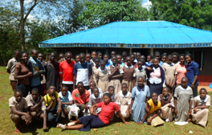
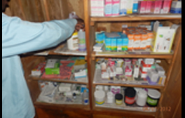
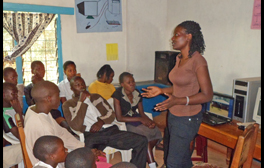

FREEDOM FOR GIRLS Through H.E.A.R.T, we seek to provide girls with equal access to education through provision of undergarments sanitary napkins and hygiene education. >>
EDUCATION
OLCAP currently runs a mentorship programme in schools in rural areas of Ikolomani Kakamega County, Western Kenya. The aim of the programme is to encourage young people in school to unleash their potential and achieve their dreams in life.FREEDOM FOR GIRLS Through H.E.A.R.T, we seek to provide girls with equal access to education through provision of undergarments sanitary napkins and hygiene education. >>

HEALTH
OLCAP is currently improving access to health care by working in partnership with community clinics. We are currently working with Lukanji community health clinic to provide basic health care to community members,treating common diseases such as malaria. OLCAP has also been able to create awareness on HIV/AIDS through training peer educators who educate the community on HIV/AIDS. We also partner with local clinics for referrals, both young and old people for HIV testing and treatment. >> 